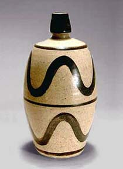
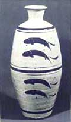
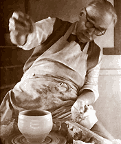

| Bernard Leach (1897-1979)
British Potter
Bernard
Leach is regarded as one of the great British potters of
the 20th century. He spent eleven years in Japan, from 1909 to 1920,
after which he returned to England to set up the St.
Ives pottery and to spread the message of ceramics, the
Oriental way. His influence through his writings and as mentor of
many successful potters (e.g Michael
Cardew, Harry
Davis) has earned him a reputation as pivotal reformer of
Western ceramics.
Leach
made a plethora of pots, which were largely influenced by his 'Sung
Standard' - what he perceived as Korean and Japanese peasant pottery
- humble and unassuming, but at the same time of an indisputable
beauty. It was to this 'standard' that he devoted his life's work.

Leach
not only made pots, but was also responsible for a number of publications,
e.g. A Potter in Japan and his pioneering A
Potter's Book - also dubbed 'The Potter's Bible'.
More Articles
More Artists of the Week
|